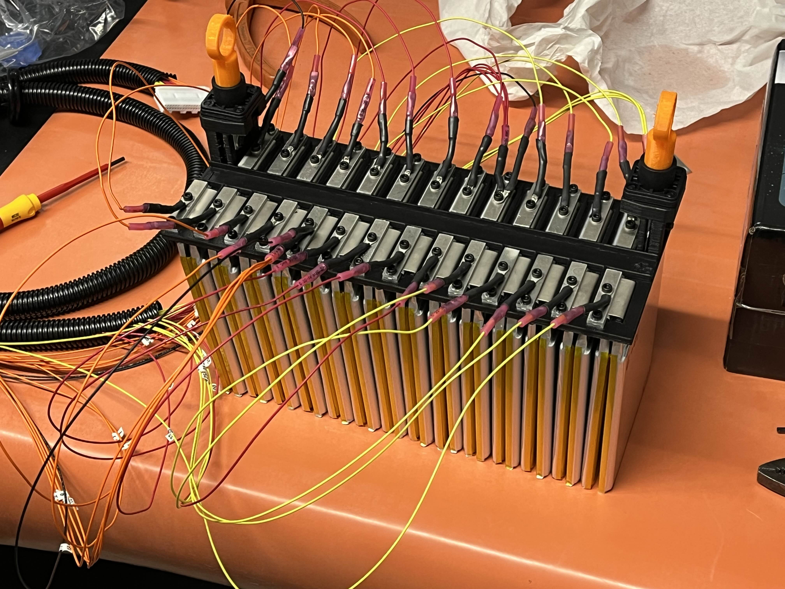
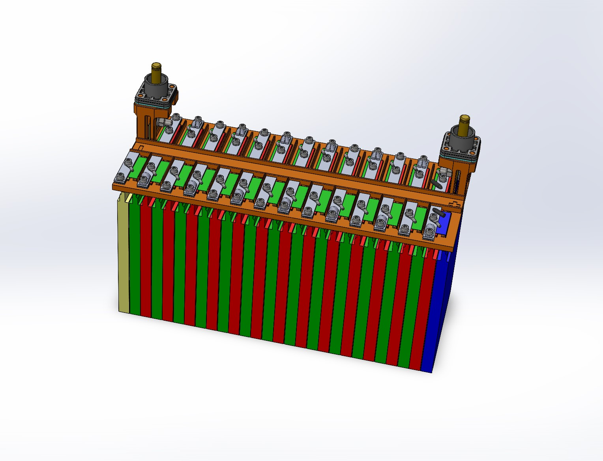
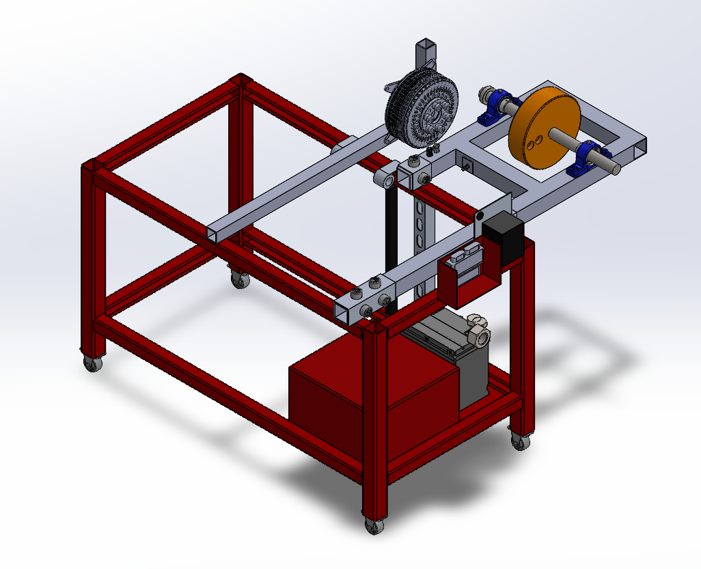
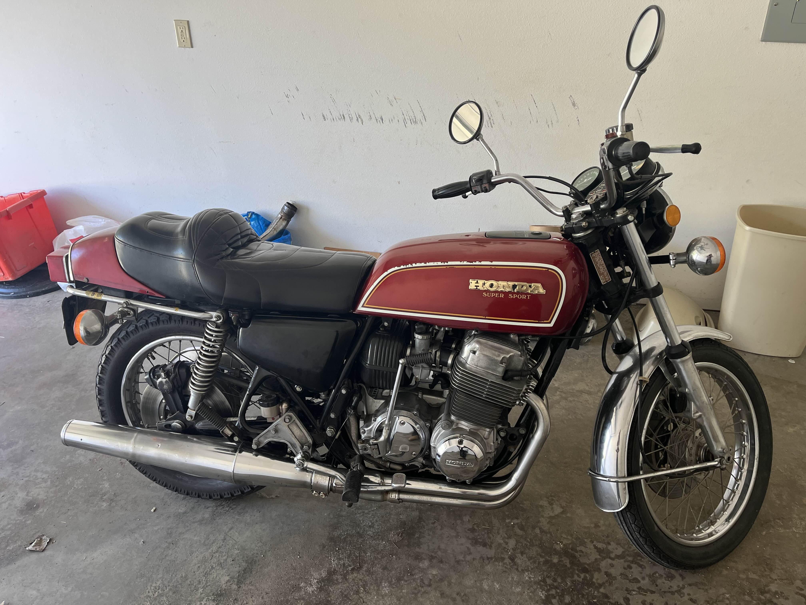
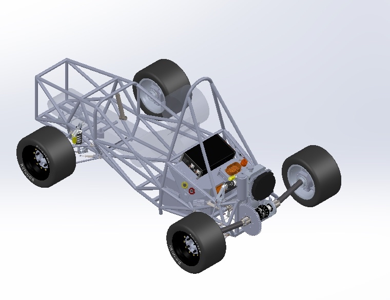
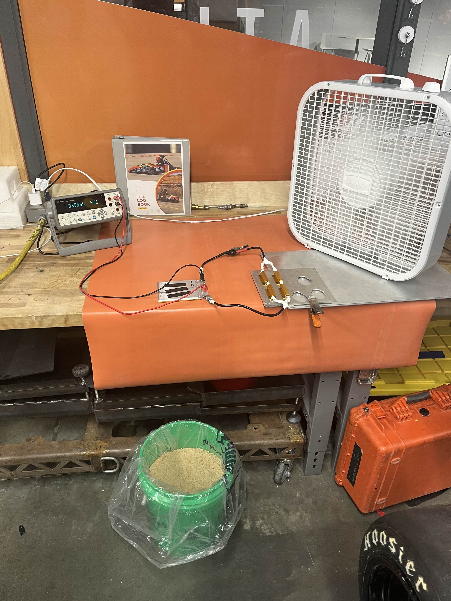

Projects I have researched, designed, or manufactured


FSAE Tractive Battery Module

Dynamometer Cart + Motor Testing

1976 Honda CB750F Restoration

2 Week Tube Chassis
Current Projects
Ongoing work in progress

Cell Characterization
FSAE Tractive Battery Module
This project involved the manufacturing of the teams first tractive system battery module and test it to highlight key manufacturing inneficiencies and potential issues to improve in future packs.
Project Timeline
(Date)
Milestone 1: Assembly
(Date)
Milestone 2: Inneficiencies highlighted
(Date)
Milestone 3: Modules Completed and Tested
Initial assembly was completed of the first module.
Due to the geometry of the tab clmaping plates and bolts, the inner most nuts were meant to be press fit, and thus weren't accessible. To combat that JB weld had to be temporarily used to complete these modules. Further issues with cross threading were highlighted. Additionally, cells were on average 0.7mm thinner than the design leading to a lack of stack pressure.
Module integrated into motor load testing with successful validation, further issues were hilighted with thermals.
Dynamometer Cart + Motor Testing
This project focused on designing a mobile dynamometer cart for testing electric motors. The system allowed measurement of motor performance under various load conditions, validating our first electric powertrain design.
Project Timeline
(Date)
Milestone 1: System Design
(Date)
Milestone 2: Assembly
(Date)
Milestone 3: Full System Validation
Designed the dynamometer cart layout and load measurement system.
Assembled full dyno cart and mounted all powertrain components.
Conducted first loaded motor testing with all powertrain components.
1976 Honda CB750F Restoration
A full restoration of a 1976 Honda CB750F motorcycle, including carb rebuild, tune, compresion testing, timing, and electrical system upgrades. The project preserved the classic design while maintaining performance and reliability.
Project Timeline
(Date)
Milestone 1: Disassembly
(Date)
Milestone 2: Carbeurator Swap/Rebuild
(Date)
Milestone 3: First Start
Complete disassembly of parts for inspection.
New Keihin 7A carbs with new floats and pilot jets to match the original carbs were installed.
After re-assembly, the motorcycle was started and was able to complete a 100 mile ride with minimal issues, further evaluation of the carbeurators and wiring harness may be added to the scope of this project.
2 Week Tube Chassis
After a carbon chassis failure, this rapid-design project to create a lightweight tube chassis matching the geometry of CR29 while maintaining rules compliance was completed in two weeks. The chassis was engineered for structural integrity and ease of manufacturing, we called it CR25-C.
Project Timeline
(Date)
Milestone 1: Design Phase
(Date)
Milestone 2: SES/Rules Conformance
(Date)
Milestone 3: Project Termination
Refrencing the CAD design of CR25 and adapting it to match the geometry of CR29, CR25-C was modeled.
Completed and submitted an SES form to validate CR25-C.
After near passing SES, a vote was taken to allocate funds to build a chassis to bring the car to comp, but the team found it to be in our best intrests to optimize CR28 making one of our most competitive IC cars.
Cell Characterization
DCIR Testing
An ongoing project to characterize battery cells using DCIR testing, focusing on performance metrics such as internal resistance and capacity under varying conditions. The scope of this project is to create a 2RC model to be used in custom BMS work.
Project Timeline
(Date)
Milestone 1: Test Setup
(Date)
Milestone 2: Initial Testing
(Date)
Milestone 3: Data Analysis
Configured DCIR testing equipment and protocols.
Conducted preliminary tests on battery cells.
Analyzed test data to evaluate cell performance.
Maximus Anderson
mnra@iastate.edu
I'm a mechanical engineering student who excels in manufacturing, electric race cars, and integrated systems design.